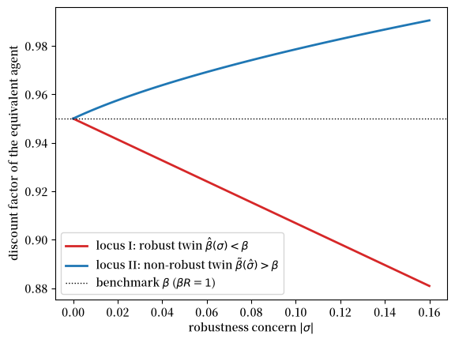
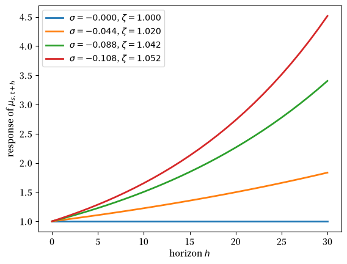
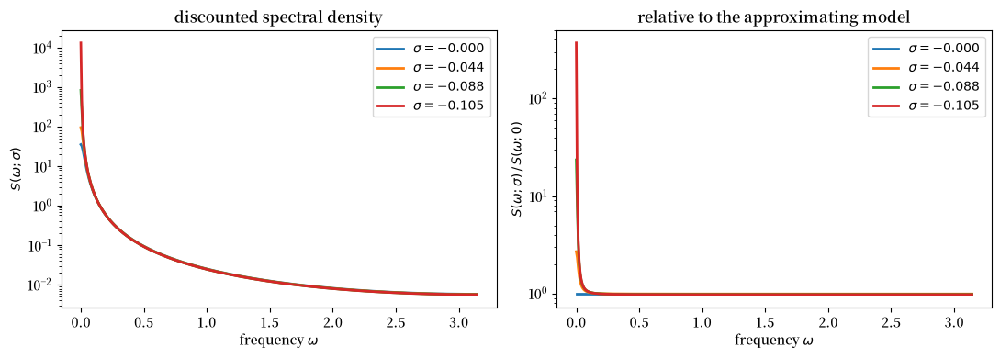
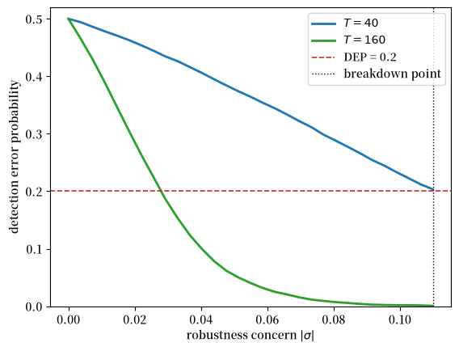

85. 稳健消费平滑与预防性储蓄#
85.1. 概述#
本讲座研究由 Hansen et al. [1999] 和 Hansen and Sargent [2008] 提出的 LQ 永久收入模型的稳健版本。
一个不信任自己对劳动收入过程设定的消费者会从事某种形式的预防性储蓄。
这是关于 LQ 永久收入模型四讲中的第三讲。
它建立在 LQ 永久收入模型 之上，该讲座发展了标准模型，以及 不完全市场与完全市场下的消费平滑，该讲座研究了其横截面和市场结构方面的含义。
后续的 稳健 LQ 贝利模型 将利用本讲座得出的结果，构建一个由对其收入模型信任程度各异的消费者组成的 Bewley 经济。
我们对具有稳健性考量的模型的描述包括：
对于数量而言，稳健性考量如何在观测上等价于不耐心程度的增加
消费者用来塑造其决策规则的最坏情况模型如何扭曲基准模型的禀赋过程，使其朝向更强的持续性
一个崩溃点，超过该点稳健控制问题将不再有解
对禀赋过程设定误差影响的频域表示
对模型不确定性大小的检测误差概率刻画
一个反复出现的主题是：单一标量 \(\alpha^2\)（消费者边际效用创新项的方差）总结了禀赋过程中与稳健性相关的一切信息。
让我们从一些导入开始。
import numpy as np
import matplotlib.pyplot as plt
import matplotlib as mpl # i18n
FONTPATH = "fonts/SourceHanSerifSC-SemiBold.otf" # i18n
mpl.font_manager.fontManager.addfont(FONTPATH) # i18n
mpl.rcParams['font.family'] = ['Source Han Serif SC'] # i18n
85.2. 简要回顾#
我们回顾 LQ 永久收入模型 和 不完全市场与完全市场下的消费平滑 的要点。
85.2.1. 符号约定#
因为一个稳健的决策者需要防范对冲击均值的扭曲，我们需要为冲击本身与对其的扭曲分别使用不同的符号。
因此，我们采用以下约定，这些约定在三处与前两讲不同。
备注
\(w_{t+1}\) 是基准的独立同分布冲击，与 LQ 永久收入模型 中一致，而 \(v_{t+1}\) 是对其条件均值的扭曲，与 稳健永久收入与定价 中一致。
\(\sigma \leq 0\) 是稳健性参数。前几讲中记作 \(\sigma_1\) 和 \(\sigma_2\) 的两个禀赋冲击的标准差，在此处重命名为 \(\eta_1\) 和 \(\eta_2\)，以便 \(\sigma\) 可以自由使用。
\(a_t\) 表示消费者的净资产，等于 LQ 永久收入模型 中债务 \(b_t\) 的负值。这使得 \(b_t\) 可以留给 Hansen et al. [1999] 中的偏好转移变量使用。
85.2.2. 模型#
一个具有二次效用和贴现因子 \(\beta\) 的消费者面对禀赋过程
最优决策规则具有一个状态空间表示，其中状态是当前消费 \(c_t\) 和外生禀赋状态 \(z_t\)：
我们再次使用双因子禀赋 \(y_t = z_{1t} + z_{2t}\)，
其中 \(z_{1t}\) 是永久成分，\(z_{2t}\) 是纯粹的暂时成分。
85.2.3. 消费的新息#
基于 (85.2) 构造的一个标量将承担下文的全部工作。
(85.2) 的第一行表明，消费是一个随机游走，其新息为 \(h\, w_{t+1}\)，其中
定义 \(\alpha^2\) 为该新息的方差，
对于双因子禀赋 (85.3)，我们有 \(\check A = \mathrm{diag}(1,0)\)、\(\check C = \mathrm{diag}(\eta_1,\eta_2)\) 以及 \(\check G = \begin{pmatrix}1 & 1\end{pmatrix}\)，从而 \((I-\beta\check A)^{-1} = \mathrm{diag}\bigl((1-\beta)^{-1},1\bigr)\)，于是
永久冲击的方差 \(\eta_1^2\) 以系数 \(1\) 出现，因为单位永久冲击会完全资本化进消费中。
暂时冲击的方差 \(\eta_2^2\) 以较小的系数 \((1-\beta)^2\) 出现，因为只有其年金价值会被消费。
这个标量在本系列的三讲中承担三重作用。
备注
\(\alpha^2\) 同时是
LQ 永久收入模型 中消费新息的方差，
不完全市场与完全市场下的消费平滑 中消费的截面方差随年龄增长的速率，以及
本讲中乘以 \(\sigma\) 后决定每一个稳健性结果的量。
稳健永久收入与定价 将同一个量记作 \(\theta^2\)。
下面的单元格固定了后文使用的校准。
β = 0.95 # 贴现因子，因此 R = 1/β
η1 = 0.15 # 永久冲击的标准差
η2 = 0.30 # 暂时冲击的标准差
R = 1 / β
α2 = η1**2 + (1 - β)**2 * η2**2
α = np.sqrt(α2)
print(f"α^2 = {α2:.6f}")
print(f" 永久部分 η1^2 = {η1**2:.6f} "
f"（占 α^2 的 {100 * η1**2 / α2:5.1f}%）")
print(f" 暂时部分 (1-β)^2 η2^2 = {(1 - β)**2 * η2**2:.6f} "
f"（占 α^2 的 {100 * (1 - β)**2 * η2**2 / α2:5.1f}%）")
α^2 = 0.022725
永久部分 η1^2 = 0.022500 （占 α^2 的 99.0%）
暂时部分 (1-β)^2 η2^2 = 0.000225 （占 α^2 的 1.0%）
在此校准下，永久冲击几乎占据了 \(\alpha^2\) 的全部份额。
85.3. 稳健永久收入模型#
85.3.1. 稳健性与预防性储蓄#
我们现在研究一个不信任自己对支配其劳动收入的随机过程设定的消费者。
该模型由 Hansen et al. [1999] (HST) 提出，他们用美国季度消费和投资数据对其进行了估计。
关于 HST 模型及其资产定价含义的更完整论述，请参见 稳健永久收入与定价。
一个担心模型设定误差的消费者会从事某种形式的预防性储蓄，这不同于通常的预防性动机，后者需要凸的边际效用。
在这里，预防性动机之所以产生，是因为消费者想要防范收入冲击条件均值的设定误差，并且即使在二次偏好下它也起作用。
HST 展示了一个重要的观测等价性结果：仅就数量 \((c_t, i_t)\) 而言，稳健性考量与不耐心程度的增加，即 \(\beta\) 的减小，是无法区分的。
我们在下文中仔细展开这一结果。
85.3.2. HST 模型#
HST 的模型的特点是一个计划者，其偏好作用于消费流 \(\{c_t\}\)，通过服务流 \(\{s_t\}\) 来中介。
设 \(b\) 为一个偏好移位项，或效用极乐点。
稳健计划者的贝尔曼方程为
受制于家庭技术、资本积累、禀赋动态以及状态法则：
这里 \(^*\) 表示下一期的值；\(c\) 是消费；\(s\) 是标量服务度量；\(h\) 是习惯存量；\(k\) 是资本存量；\(i\) 是投资；\(d\) 是禀赋冲击；\(b\) 是偏好冲击；\(\gamma\) 是资本边际产量；\(w^* \sim N(0,I)\) 是基准冲击；而 \(v^*\) 是由一个最小化代理选择的对 \(w^*\) 条件均值的扭曲。
惩罚参数 \(\theta\) 支配着消费者对稳健性的考量。
较大的 \(\theta\) 使扭曲的代价高昂，因此约束了最小化代理。
我们使用变换
因此 \(\sigma = 0\)（等价地 \(\theta = \infty\)）对应于没有稳健性考量，而 \(\sigma < 0\) 对应于日益增强的考量。
当 \(\lambda > 0\) 且 \(\delta_h \in (0,1)\) 时，技术 (85.8) 容纳了习惯持续性或耐久性，而存量 \(h_t\) 是当前和过去消费的几何加权平均。
方程 \(c_t + k_t = R k_{t-1} + d_t\)（其中 \(R = \delta_k + \gamma\)）将资本积累与线性生产技术结合起来，因此 \(R\) 是资本的物质总回报率。
设 \(x_t^\top = [h_{t-1},\, k_{t-1},\, z_t^\top]\)。
状态转移方程为
其中 \(u_t = c_t\)，\(v_{t+1}\) 是对 \(w_{t+1}\) 条件均值的扭曲。
HST 用美国季度数据（1970Q1 至 1996Q3）估计了该模型，消费使用非耐久品加服务，投资使用耐久品消费加私人总投资。
他们施加了 \(\beta R = 1\) 和 \(\delta_k = 0.975\)，因此一旦估计出 \(\beta\)，\(\gamma\) 就被确定下来。
他们的两个偏好估计值值得记录。
参数 |
习惯 |
无习惯 |
|---|---|---|
\(\beta\) |
0.997 |
0.997 |
\(\delta_h\) |
0.682 |
— |
\(\lambda\) |
2.443 |
0 |
\(2 \times \log L\) |
779.05 |
762.55 |
在季度频率下，\(\beta = 0.997\) 意味着年实际利率约为 \(\beta^{-4} - 1 \approx 1.2\%\)。
其余的估计参数支配着外生的 \(d_t\) 和 \(b_t\) 过程，报告于 Hansen et al. [1999] 的附录 A 中。
85.3.3. \(\sigma = 0\) 时的解#
当 \(\sigma = 0\) 时目标函数简化为
构造拉格朗日函数并推导一阶条件得到
这里 \(\mu_{st}\) 是消费服务的边际估值，它总结了内生状态变量 \(h_{t-1}\) 和 \(k_{t-1}\)。
(85.12) 的最后一行意味着 \(\mathbb{E}_t\mu_{c,t+1} = (\beta R)^{-1}\mu_{ct}\)，因此当 \(\beta R = 1\) 时 \(\mu_{st}\) 是一个鞅：
对某个向量 \(\nu\)。
向前求解并代入得到
其中
且 \(\tilde\delta_h = (\delta_h + \lambda)/(1+\lambda)\)。
在被广泛研究的特殊情形 \(\lambda = \delta_h = 0\) 下，我们有 \(s_t = c_t\) 且 \(\mu_{st} = b_t - c_t\)，从非人力财富 \(Rk_{t-1}\) 中消费的边际倾向等于从人力财富 \(\sum_{j=0}^{\infty}R^{-j}\mathbb{E}_t d_{t+j}\) 中消费的边际倾向，这是 LQ 模型的一个众所周知的特征。
\(\mu_{st}\) 的公式可以写成 \(\mu_{st} = M_s x_t\)，其中 \(x_t\) 遵循 (85.10)。
由此可得
这个 \(\alpha\) 与我们在 (85.5) 中遇到的标量相同。
要理解为何如此，设 \(\lambda = \delta_h = 0\) 并固定 \(b_t\)，那么 \(\mu_{st} = b - c_t\)，而 \(\mu_{st}\) 的创新就是 \(c_t\) 创新的相反数。
因此 \(\nu^\top = -h\) 且 \(\alpha^2 = \nu^\top\nu = h h^\top\)，恰如 (85.5) 中所示。
符号无关紧要，因为只有 \(\alpha^2\) 会出现在后续推导中。
85.4. 观测等价性#
HST 提出了一个观测等价性定理。
定理 85.1 (观测等价性，I)
固定除 \((\sigma, \beta)\) 之外的所有参数，并假设当 \(\sigma = 0\) 时 \(\beta R = 1\)。
存在 \(\underline\sigma < 0\)，使得对任意 \(\sigma \in (\underline\sigma, 0)\)，\((0,\beta)\) 情形下的最优消费-投资计划，也会被参数为 \((\sigma, \hat\beta(\sigma))\) 的稳健决策者所选择，其中
且 \(\hat\beta(\sigma) < \beta\)。
(85.17) 中的第二个等式使用了 \(R = \beta^{-1}\)，这将是我们在计算中使用的形式。
由于 \(R > 1\) 且 \(\alpha^2 > 0\)，\(\sigma\) 越负（意味着更强的稳健性关切）会降低 \(\hat\beta\)。
一个稳健的消费者想要储蓄更多，因为他的另一个自我——一个使效用最小化的行动者——使未来收入看起来比近似模型预测的更糟。
较低的贴现因子会使消费者变得不那么耐心，因此会减少储蓄。
当这两种力量根据 (85.17) 达到平衡时，在不同的 \((\sigma, \hat\beta(\sigma))\) 对之间，消费计划是相同的。
Proof. 当 \(\beta R = 1\) 且 \(\sigma = 0\) 时，边际效用 \(\mu_{st}\) 遵循鞅过程
其中 \(\tilde w_t\) 是均值为零、方差为一的标量独立同分布变量。
激活对稳健性的关切，即 \(\sigma < 0\)，会使效用最小化的另一自我设定
从而使 \(\mu_{st}\) 的最坏情形模型为
为使配置保持不变，我们要求稳健欧拉方程 \(\hat\beta R\,\hat{\mathbb{E}}_t\mu_{s,t+1} = \mu_{st}\) 在最坏情形模型下成立，这给出
最小化行动者的贝尔曼方程是一个纯预测问题，由此得出
其中 \(P(\hat\beta)\) 求解标量贝尔曼方程
方程 (85.17) 是一个很有用的数值对象，因为它给出了从稳健性参数到观测等价贴现因子之间的一个线性映射。
85.4.1. 预防性储蓄的解释#
消费者对模型设定误差的关切，激活了支撑观测等价性定理的预防性储蓄动机。
对稳健性的关切会使消费者储蓄更多。
减小 \(\beta\) 会使消费者储蓄更少。
观测等价性定理表明，这两种力量可以被设置成恰好相互抵消。
在特殊情形 \(\lambda = \delta_h = 0\) 中，\(s_t = c_t\)，消费规则为
对非人力财富 \(Rk_{t-1}\) 的边际消费倾向，等于对人力财富 \(\mathbb{E}_t\sum R^{-j}d_{t+j}\) 的边际消费倾向。
这种相等倾向的特性是 LQ 模型的标志，并且在存在稳健性关切时也得以保持，这与通常的具有凸边际效用的预防性储蓄模型形成对比。
定理 85.1 表明，当 \(\sigma < 0\) 时，观测等价的 \(\hat\beta\) 满足 \(\hat\beta < \beta\)。
如果起点满足 \(\beta R = 1\)，那么 \(\hat\beta R < 1\)。
对于在相同利率下、贴现因子为 \(\hat\beta\) 的非稳健消费者，欧拉方程意味着 \(\mathbb{E}_t c_{t+1} < c_t\)，因此预期消费随时间下降。
这种向下的漂移正是 定理 85.1 中的不耐心抵消效应。
它抵消了稳健消费者的预防性储蓄动机，从而使消费和投资数量保持不变。
经典的预防性动机产生的原因是
这一渠道需要边际效用的凸性，而在二次型偏好下并不存在。
相比之下，基于稳健性的预防性动机是通过对冲击条件均值的扭曲发挥作用的，它改变了非金融收入创新的一阶矩。
85.4.2. 观测等价性与扭曲预期#
观测等价性的结果可以借助斯塔克尔伯格乘数博弈来解释。
在最小化行动者已经承诺了扭曲过程 \(\{v_{t+1}\}\) 之后，最大化行动者面临的状态 \(X_t\) 的最坏情形运动法则如下：
一个稳健的消费者使用扭曲转移矩阵 \(A - BF + CK\) 而不是近似转移矩阵 \(A - BF\) 来形成对未来收入的预期。
扭曲预期算子 \(\hat{\mathbb{E}}_t\) 满足
观测等价性要求修正后的人力财富公式
等于其基准对应项 \(\Psi_4 \sum_{j=0}^{\infty} R^{-j} \mathbb{E}_t d_{t+j}\)。
这是通过系数 \(\hat\Psi_j\) 借助 \(\hat\beta\) 的调整、以及扭曲预期算子 \(\hat{\mathbb{E}}_t\) 借助 \(\sigma\) 的调整，两者相互配合来实现的。
\(A - BF + CK\) 的最坏情形特征值在模上超过 \(A - BF\) 的特征值，因此最坏情形的扭曲使得收入过程比在近似模型下更具持续性。
这就是状态空间形式下的预防性动机：最小化行动者通过引入低频持续性，使未来收入看起来风险更大。
在下一节的标量简化中，这个特征值即为 \(\zeta\)，我们将验证 \(\zeta > 1\)，而近似模型具有单位根。
85.4.3. 另一个观测等价性结果#
定理 85.2 (观测等价性，II)
固定除 \((\sigma,\beta)\) 之外的所有参数，考虑 \((\hat\sigma, \hat\beta)\) 情形下的一个消费-投资配置，其中 \(\hat\beta R = 1\) 且 \(\hat\sigma < 0\)。
那么存在 \(\tilde\beta > \hat\beta\)，使得 \((\hat\sigma, \hat\beta)\) 配置也求解了 \((0, \tilde\beta)\) 问题。
定理 85.1 表明，从满足 \(\beta R = 1\) 的基准出发，激活稳健性等价于减小 \(\beta\)。
定理 85.2 则走向相反的方向：从满足 \(\beta R = 1\) 的起点激活对稳健性的关切所产生的效果，可以通过增大 \(\beta\) 同时设定 \(\sigma = 0\) 来复现。
换言之，当 \(\beta R = 1\) 时，对稳健性的关切的作用就像贴现因子的增大一样，将 \(\beta R\) 推高至大于 1，并使预期消费路径产生向上的漂移。
Proof. 在 \(\hat\beta R = 1\) 且 \(\hat\sigma < 0\) 时，稳健欧拉方程意味着
我们要寻找 \(\tilde\beta > \hat\beta\) 及 \(\sigma = 0\)，使得相同的配置求解贴现因子为 \(\tilde\beta\) 的非稳健问题。
关键的一步是观察到，最坏情形扭曲 \(K(\hat\sigma, \hat\beta)\) 在边际效用过程中引入的漂移，等价于将贴现因子提高到 \(\hat\beta\) 以上所产生的漂移。
令这两种漂移相等，并求解标量贝尔曼方程中的 \(K\)，得到
设 \(\hat\sigma = 0\)，使平方根等于 \((1-\hat\beta)/(1+\hat\beta)\)，从而 \(\tilde\beta = \hat\beta\)。
由于 \(1 + \hat\sigma\alpha^2\) 随 \(\hat\sigma\) 降至零以下而减小，前置因子和平方根都会增大，因此只要 \(\hat\sigma < 0\)，就有 \(\tilde\beta > \hat\beta\)。
85.4.4. 比较两条轨迹#
(85.17) 与 (85.30) 都是闭式表达式，因此我们可以直接将它们画出来。
我们从满足 \(\beta R = 1\) 的基准出发。
σ_grid = np.linspace(0.0, -0.16, 60)
# locus I: non-robust agent fixed at βR=1, report the robust twin's β̂(σ)
β_hat = β + σ_grid * α2 * β / (1 - β)
# locus II: robust agent fixed at βR=1, report the non-robust twin's β̃(σ̂)
q = 1 + σ_grid * α2
β_tilde = β * (1 + β) / (2 * q) * (1 + np.sqrt(1 - 4 * β * q / (1 + β)**2))
fig, ax = plt.subplots()
ax.plot(-σ_grid, β_hat, lw=2, color='C3',
label=r'locus I: robust twin $\hat\beta(\sigma) < \beta$')
ax.plot(-σ_grid, β_tilde, lw=2, color='C0',
label=r'locus II: non-robust twin $\tilde\beta(\hat\sigma) > \beta$')
ax.axhline(β, color='k', linestyle=':', lw=1,
label=r'benchmark $\beta$ ($\beta R = 1$)')
ax.set_xlabel(r'robustness concern $|\sigma|$')
ax.set_ylabel('discount factor of the equivalent agent')
ax.legend()
plt.show()
findfont: Failed to find font weight normal, now using 600.
findfont: Failed to find font weight normal, now using 600.

图 85.1 Two observational-equivalence experiments. Locus I holds the non-robust agent fixed at \(\beta R = 1\) and reports the robust twin’s discount factor \(\hat\beta(\sigma)\); locus II holds the robust agent fixed at \(\beta R = 1\) and reports the non-robust twin’s discount factor \(\tilde\beta(\hat\sigma)\).#
两条轨迹都在 \(\sigma = 0\) 处经过基准 \(\beta\)，并随着稳健性关切的增大而分离。
理解 图 85.1 的关键在于，这两条轨迹固定的是不同的行动者，因此纵轴所绘制的贴现因子在每条曲线上所指的是不同的行动者。
来自 定理 85.1 的轨迹 I，将非稳健行动者固定在满足 \(\beta R = 1\) 的基准 \((\sigma = 0, \beta)\) 处，并报告能够模仿它的稳健行动者的贴现因子 \(\hat\beta(\sigma) < \beta\)。
这正是 HST 所说的、对稳健性的关切在观测上等价于较低贴现因子的意义所在：因为稳健性已经使行动者储蓄更多，所以必须降低其贴现因子才能使配置维持在基准水平。
因为非稳健基准满足 \(\beta R = 1\)，其最优消费是一个鞅过程，即 \(\mathbb{E}_t c_{t+1} = c_t\)。
稳健的另一自我选择相同的消费过程，因此它也满足 \(\mathbb{E}_t c_{t+1} = c_t\)。
较低的 \(\hat\beta\)（满足 \(\hat\beta R < 1\)）单独来看会带来向下的漂移，但稳健行动者的预防性储蓄恰好抵消了它，使预期消费保持平稳。
来自 定理 85.2 的轨迹 II，则将稳健行动者固定在满足 \(\beta R = 1\) 的 \((\hat\sigma, \beta)\) 处，并报告能够模仿它的非稳健行动者的贴现因子 \(\tilde\beta(\hat\sigma) > \beta\)。
在这里不存在不耐心抵消效应，因此共同的配置继承了稳健行动者预防性储蓄产生的向上漂移，非稳健的另一自我通过 \(\tilde\beta R > 1\) 来复现这一点。
这两个实验所编码的是相同的经济学原理：对稳健性的关切增加了预防性储蓄，其作用就如同额外的耐心。
它们的区别仅在于哪个行动者被锚定在 \(\beta R = 1\)，因而在于共同的储蓄动机究竟表现为恰好抵消的不耐心调整（如轨迹 I 中预期消费保持平稳），还是表现为预期消费的向上漂移（如轨迹 II 中所示）。
85.5. 标量最坏情形模型#
定理 85.1 的证明将稳健问题化简为关于边际效用 \(\mu_{st}\) 的标量预测问题。
这个标量问题可以求出闭式解，值得一做，因为它使得最坏情形动态、崩溃点和频域结果都变得透明。
85.5.1. 闭式解#
将 (85.21) 与 (85.17) 以及 \(R = \beta^{-1}\) 结合，可直接得到最坏情形持续性：
这是本讲座的核心公式。
边际效用的最坏情形持续性恰好等于两个贴现因子之比。
由于当 \(\sigma<0\) 时 \(\hat\beta(\sigma) < \beta\)，我们有 \(\zeta(\sigma) > 1\)：\(\mu_{st}\) 的近似模型具有单位根，而最坏情形模型是轻度发散的。
这正是 (85.26) 中所述最坏情形转移矩阵的特征值大于近似模型的特征值这一命题的标量对应形式。
我们还可以显式求解 (85.23)。
记 \(u = \sigma\alpha^2\) 且 \(\delta = 1-\beta\)，于是 (85.17) 可写成 \(\hat\beta - 1 + u = (u - \delta^2)/\delta\)。
那么 (85.23) 中的判别式恰好是一个完全平方：
因此 (85.23) 的两个根都可以写成闭式：
代入 (85.22)，第一个根重现了 (85.31)，而第二个根给出常数 \(\zeta = R\)，这在两个根重合的那个点之外都会违反欧拉方程 (85.21)。
因此在经济学意义上相关的根是常数 \(P = -(1-\beta)^{-1}\)，它与 \(\sigma\) 无关。
备注
通过取两个根中距离目标值 \((\hat\beta R)^{-1}\) 更近者来数值选取根，是很危险的做法。
由于 (85.32) 是完全平方，平方根为 \(|u+\delta^2|/\delta\)，而当 \(u\) 越过 \(-\delta^2\) 时，前面用于选取 \(P = -(1-\beta)^{-1}\) 的符号会发生翻转。
按距离准则来挑选根的求解器会在此处悄无声息地切换分支。
85.5.2. 崩溃点#
定理 85.1 断言存在下界 \(\underline\sigma < 0\)，但没有说明它具体是多少。
标量模型告诉了我们答案。
最小化主体的问题只有在贴现后的最坏情形状态是平方可和的情况下才具有有限值，也就是说，只有当 \(\hat\beta\,\zeta^2 < 1\) 时才成立。
利用 (85.31) 中的 \(\hat\beta = \beta/\zeta\)，该条件为 \(\beta\zeta < 1\)，等价于 \(\zeta < R\)。
代入 (85.31) 并求解，可得崩溃点：
在 \(\sigma = \underline\sigma\) 处，三件事同时发生。
最坏情形持续性达到 \(\zeta = R\)，因此恰好有 \(\hat\beta\zeta^2 = 1\)。
观测等价贴现因子达到 \(\hat\beta = \beta^2\)。
当 \(\sigma < \underline\sigma\) 时，稳健控制问题没有解，在该区域给出的任何数值结果都是没有意义的。
因此下面的每张图都将 \(\sigma\) 限制在 \((\underline\sigma, 0]\) 范围内。
85.5.3. 验证闭式解#
以下代码单元数值求解二次方程 (85.23)，并将其与闭式解 (85.31) 和 (85.33) 进行核对。
def worst_case_persistence(σ, β, α2):
"""
Worst-case persistence ζ(σ) of marginal utility on the
observational-equivalence locus, from eq:rcs-zeta.
"""
return 1 / (1 + σ * α2 / (1 - β))
def solve_scalar_riccati(σ, β, α2):
"""
Solve the scalar Bellman equation eq:rcs-riccati by brute force and
return both roots together with the implied persistence ζ = 1/(1-σα²P).
"""
β_hat = β + σ * α2 * β / (1 - β)
u = σ * α2
disc = (β_hat - 1 + u)**2 + 4 * u
roots = np.array([(β_hat - 1 + u + s * np.sqrt(disc)) / (-2 * u)
for s in (1.0, -1.0)])
return roots, 1 / (1 - u * roots)
σ_lo = -(1 - β)**2 / α2 # breakdown point, eq:rcs-breakdown
print(f"breakdown point σ̲ = {σ_lo:.6f}")
print(f"there β̂ = {β + σ_lo * α2 * β / (1 - β):.6f} "
f"(β² = {β**2:.6f})")
print(f" ζ = {worst_case_persistence(σ_lo, β, α2):.6f} "
f"(R = {R:.6f})")
print(f"\n{'σ':>10}{'P (numerical roots)':>28}{'-1/(1-β)':>12}"
f"{'ζ (num)':>12}{'ζ (closed)':>12}")
for σ in [-0.02, -0.05, -0.09, -0.105]:
roots, ζs = solve_scalar_riccati(σ, β, α2)
keep = np.argmin(np.abs(roots + 1 / (1 - β)))
print(f"{σ:10.3f}{str(np.round(roots, 4)):>28}{-1 / (1 - β):12.4f}"
f"{ζs[keep]:12.6f}{worst_case_persistence(σ, β, α2):12.6f}")
breakdown point σ̲ = -0.110011
there β̂ = 0.902500 (β² = 0.902500)
ζ = 1.052632 (R = 1.052632)
σ P (numerical roots) -1/(1-β) ζ (num) ζ (closed)
-0.020 [ -20. -110.011] -20.0000 1.009173 1.009173
-0.050 [-20. -44.0044] -20.0000 1.023253 1.023253
-0.090 [-20. -24.4469] -20.0000 1.042650 1.042650
-0.105 [-20. -20.9545] -20.0000 1.050114 1.050114
对每一个 \(\sigma\) 而言，都有一个根固定在 \(-(1-\beta)^{-1} = -20\)，恰如 (85.33) 所预测，且其所隐含的 \(\zeta\) 与闭式解在显示精度上一致。
还请注意，当 \(\sigma\) 降至 \(\underline\sigma \approx -0.11\) 附近时，两个根会彼此靠近。
下图绘制了在容许范围内最坏情形脉冲响应 \(\zeta^h\)。
horizons = np.arange(31)
fig, ax = plt.subplots()
for frac in [0.0, 0.4, 0.8, 0.98]:
σ = frac * σ_lo
ζ = worst_case_persistence(σ, β, α2)
ax.plot(horizons, ζ**horizons, lw=2,
label=rf'$\sigma={σ:.3f}$, $\zeta={ζ:.3f}$')
ax.set_xlabel('horizon $h$')
ax.set_ylabel(r'response of $\mu_{s,t+h}$')
ax.legend()
plt.show()

图 85.2 Worst-case impulse response of marginal utility. The approximating model has a unit root; the worst-case model is increasingly explosive as \(\sigma\) falls toward the breakdown point \(\underline\sigma\).#
图 85.2 显示，随着 \(\sigma\) 下降，最小化主体将近似模型的单位根转化为轻度发散性。
在崩溃点处，响应将以总利率 \(R\) 增长，从而使贴现后的最坏情形状态不再是平方可和的。
85.6. 频域解释#
LQ 永久收入框架具有自然的频域解释。
消费者的凹效用函数使其厌恶消费中的高频波动，因此他通过调整储蓄来平滑消费。
高频波动容易被平滑，因此消费者对收入过程高频特征的模型设定误差自动具有稳健性。
低频波动则更难被平滑，因为它们更为持久。
在 HST 的频域记号中，从冲击 \(w_t\) 到目标 \(s_t - b_t\) 的传递函数为 \(G(\cdot)\)，\(H_2\) 准则的频率分解为
在 \(\sqrt{\beta}\,e^{i\omega}\) 处而非在 \(e^{i\omega}\) 处求值是至关重要的，而不仅仅是一种惯例。
\(\mu_{st}\) 的近似模型和最坏情形模型都是非平稳的，前者具有单位根，后者是爆炸性的，因此二者都没有普通的谱密度。
用 \(\sqrt\beta\) 进行贴现正是使 (85.35) 中的对象变得有限的原因。
在 标量最坏情形模型 的标量模型中，目标为 \(s_t - b_t = -\mu_{st}\)，由 (85.20) 我们可以得出传递函数和贴现谱密度
当 \(\zeta\sqrt{\hat\beta} < 1\) 时该值恰好是有限的，这正是定义崩溃点 (85.34) 的条件 \(\hat\beta\zeta^2<1\)。
因此频域对象和崩溃点是同一约束的两种视角。
在 \(\sigma = 0\) 时，我们有 \(\zeta = 1\) 且 \(\hat\beta = \beta\)，此时 (85.36) 简化为随机游走的贴现谱密度。
ω = np.linspace(0, np.pi, 400)
def spectrum(σ, β, α2):
ζ = worst_case_persistence(σ, β, α2)
β_hat = β / ζ
return α2 / np.abs(1 - ζ * np.sqrt(β_hat) * np.exp(1j * ω))**2
S0 = spectrum(0.0, β, α2)
fig, axes = plt.subplots(1, 2, figsize=(11, 4))
for frac in [0.0, 0.4, 0.8, 0.95]:
σ = frac * σ_lo
S = spectrum(σ, β, α2)
axes[0].plot(ω, S, lw=2, label=rf'$\sigma={σ:.3f}$')
axes[1].plot(ω, S / S0, lw=2, label=rf'$\sigma={σ:.3f}$')
axes[0].set_yscale('log')
axes[0].set_xlabel(r'frequency $\omega$')
axes[0].set_ylabel(r'$S(\omega;\sigma)$')
axes[0].set_title('discounted spectral density')
axes[0].legend()
axes[1].set_yscale('log')
axes[1].set_xlabel(r'frequency $\omega$')
axes[1].set_ylabel(r'$S(\omega;\sigma)\,/\,S(\omega;0)$')
axes[1].set_title('relative to the approximating model')
axes[1].legend()
fig.tight_layout()
plt.show()
findfont: Failed to find font weight normal, now using 600.

图 85.3 Left: the discounted spectral density of the robust consumer’s target. Right: the same densities relative to the approximating model. The minimizing agent concentrates its distortion at low frequencies, where the permanent income consumer is least able to smooth.#
图 85.3 的左图显示，\(S(\omega;\sigma)\) 在 \(\omega \approx 0\) 处取得最大值，此时消费者的福利对收入波动性最为敏感。
右图揭示了关键之处：比率 \(S(\omega;\sigma)/S(\omega;0)\) 随 \(\omega\) 急剧下降。
由于认识到消费者的脆弱之处，最小化主体将最坏情形的扭曲集中在低频处，并且随着 \(|\sigma|\) 的增大而更加激进地这样做。
\(\omega = 0\) 处的峰值等于 \(\alpha^2/(1-\sqrt{\beta\zeta})^2\)，并且随着 \(\sigma \to \underline\sigma\) 而发散，这是观察崩溃点的另一种方式。
由于根据 (85.19) 扭曲为 \(v_t = K\mu_{s,t-1}\)，扭曲过程的谱密度是 \(\mu_{s,t-1}\) 密度的 \(K^2\) 倍，因此它继承了相同的低频集中特性。
85.7. 检测误差概率#
约束 \(\sigma\) 选择的一种自然方式是问：从统计上区分近似模型和最坏情形模型有多困难？
对于长度为 \(T\) 的样本，可以使用对数似然比检验来比较两个假设。
检测误差概率（DEP）是指在不知道数据由哪个模型生成的情况下，使用对数似然比统计量做出错误决策的概率：
当 \(\sigma = 0\) 时，两个模型相同，\(\mathrm{DEP} = 0.5\)。
随着 \(|\sigma|\) 增大，模型之间产生分歧，DEP 趋近于零。
在标量模型中，两个假设是完全显式的：
两者都具有方差相同（为 \(\alpha^2\)）的高斯新息，因此对数似然比是平方和之差。
def simulate_paths(ζ, α, T, n_paths, seed):
"Simulate n_paths draws of μ_{t+1} = ζ μ_t + α w_{t+1} from μ_0 = 0."
rng = np.random.default_rng(seed)
paths = np.zeros((n_paths, T + 1))
shocks = rng.standard_normal((n_paths, T))
for t in range(T):
paths[:, t + 1] = ζ * paths[:, t] + α * shocks[:, t]
return paths
def log_likelihood_ratio(paths, ζ, α):
"Return log p_worst(path) - log p_approx(path)."
lag, lead = paths[:, :-1], paths[:, 1:]
return 0.5 * (np.sum(((lead - lag) / α)**2, axis=1)
- np.sum(((lead - ζ * lag) / α)**2, axis=1))
def detection_error_probability(ζ, α, T=40, n_paths=10_000, seed=1234):
"Finite-sample DEP for the approximating and worst-case scalar laws."
if np.isclose(ζ, 1.0):
return 0.5
approx = simulate_paths(1.0, α, T, n_paths, seed)
worst = simulate_paths(ζ, α, T, n_paths, seed + 1)
return 0.5 * (np.mean(log_likelihood_ratio(worst, ζ, α) < 0)
+ np.mean(log_likelihood_ratio(approx, ζ, α) > 0))
我们使用 \(T = 40\)，即十年的季度数据。
在绘图之前，值得注意一个使 DEP 成为报告稳健性关注的恰当方式的性质。
参数 \(\sigma\) 并非无量纲的：它总是通过乘积 \(\sigma\alpha^2\) 起作用，而 \(\alpha^2\) 具有消费平方的单位。
因此，将计量消费的单位加倍会改变代表给定稳健性关注程度的 \(\sigma\) 的数值。
DEP 则没有这个问题，因为 \(\alpha\) 会在 (85.38) 中的似然比中被约掉。
ζ_test = worst_case_persistence(0.6 * σ_lo, β, α2)
for scale in [0.5, 1.0, 2.0]:
dep = detection_error_probability(ζ_test, scale * α)
print(f"α scaled by {scale:>4}: DEP = {dep:.4f}")
α scaled by 0.5: DEP = 0.3334
α scaled by 1.0: DEP = 0.3334
α scaled by 2.0: DEP = 0.3334
DEP 只依赖于 \(\zeta\) 和样本量 \(T\)。
σ_vals = np.linspace(0.0, 0.999 * σ_lo, 31)
ζ_vals = worst_case_persistence(σ_vals, β, α2)
fig, ax = plt.subplots()
for T, color in [(40, 'C0'), (160, 'C2')]:
dep_vals = np.array([detection_error_probability(ζ, α, T=T)
for ζ in ζ_vals])
ax.plot(-σ_vals, dep_vals, lw=2, color=color, label=f'$T = {T}$')
ax.axhline(0.2, color='C3', linestyle='--', lw=1.2, label='DEP = 0.2')
ax.axvline(-σ_lo, color='k', linestyle=':', lw=1,
label='breakdown point')
ax.set_xlabel(r'robustness concern $|\sigma|$')
ax.set_ylabel('detection error probability')
ax.set_ylim(0.0, 0.52)
ax.legend()
plt.show()

图 85.4 Finite-sample detection error probability against the robustness concern, over the admissible range \((\underline\sigma, 0]\), for two sample lengths. Values below the dashed line are the ones HST regard as implausible, because the approximating and worst-case models would then be too easy to tell apart.#
备注
HST 认为，高于 0.2 的 DEP 是“合理的”，这意味着这些模型在统计上仍然足够难以区分，值得关注稳健性问题。
因此，具有 \(\mathrm{DEP} \geq 0.2\) 的 \(\sigma\) 值定义了一组合理的最坏情形模型。
图 85.4 显示了这两种约束以一种有趣的方式相互作用。
当 \(T = 40\) 时，DEP 曲线在临界点几乎恰好达到 \(0.2\) 的阈值。
换句话说，在有十年的季度数据的情况下，该模型能够表示的每一种稳健性关注在统计上也是合理的：数学上的极限先起作用，而统计上的约束则较为宽松。
for frac in [0.6, 0.9, 0.999]:
ζ = worst_case_persistence(frac * σ_lo, β, α2)
print(f"σ = {frac * σ_lo:.5f} (= {frac:.3f} σ̲): "
f"DEP = {detection_error_probability(ζ, α):.4f}")
σ = -0.06601 (= 0.600 σ̲): DEP = 0.3334
σ = -0.09901 (= 0.900 σ̲): DEP = 0.2329
σ = -0.10990 (= 0.999 σ̲): DEP = 0.2034
这种近乎重合的现象是这一校准和 \(T = 40\) 的属性，而非一个定理。
当 \(T = 160\) 时，顺序反转，统计可检测性在达到临界点之前就已发挥约束作用。
σ_report = 0.6 * σ_lo
ζ_report = worst_case_persistence(σ_report, β, α2)
print(f"at σ = {σ_report:.4f} (ζ = {ζ_report:.4f}):")
for T in [20, 40, 80, 160]:
print(f" T = {T:>3}: DEP = "
f"{detection_error_probability(ζ_report, α, T=T):.4f}")
at σ = -0.0660 (ζ = 1.0309):
T = 20: DEP = 0.4147
T = 40: DEP = 0.3334
T = 80: DEP = 0.1507
T = 160: DEP = 0.0203
这一结论表明，合理的模型不确定性数量取决于设想计量经济学家所拥有的数据量。
85.8. 决策规则的稳健性#
一个自然而然的后续问题是，当数据实际上是由扭曲模型生成时，稳健决策规则是否比非稳健规则表现更好。
定义当决策规则针对稳健性参数 \(\sigma^r\) 设计，而数据由与 \(\sigma^d\) 相关联的扭曲模型生成时的收益：
其中状态在决策规则 \(F(\sigma^r)\) 和最坏情形冲击 \(K(\sigma^d)\) 下演化：
关于应该比较哪一族规则，存在一个重要的注意事项，这直接源自 定理 85.1。
沿着观测等价轨迹 \((\sigma, \hat\beta(\sigma))\)，每个主体都会选择相同的决策规则。
因此 \(F(\sigma^r)\) 沿该轨迹并不变化，\(\pi(\sigma^d;\sigma^r)\) 在该轨迹上对 \(\sigma^r\) 而言是常数。
因此，对规则进行有意义的比较必须偏离该轨迹，例如将 \(\beta\) 固定在基准值上，仅改变 \(\sigma^r\)。
该实验需要求解完整的 HST 矩阵问题，而不是 标量最坏情形模型 中的标量简化形式，因为一旦离开该轨迹，边际效用过程就不再能概括该决策规则。
稳健永久收入与定价 使用 QuantEcon 的 LQ 和稳健控制程序进行了该计算。
85.9. 结语#
对模型误设的担忧（用 \(\sigma = -\theta^{-1} \leq 0\) 参数化）以微妙而非剧烈的方式改变了永久收入模型。
对稳健性的担忧即使在二次型偏好下也会产生预防性储蓄动机，其方式是扭曲收入冲击的条件均值。
被扭曲的最坏情形模型使收入过程更加持续，将影响力转移到永久收入消费者最脆弱的低频部分。
观察等价定理 定理 85.1 表明，仅就数量 \((c_t, i_t)\) 而言，对稳健性的担忧与 \(\beta\) 的减小是无法区分的。
反向定理 定理 85.2 表明，从 \(\beta R = 1\) 出发，稳健性在观察上等价于 \(\beta\) 的增大，这会给预期消费带来向上的漂移。
有两条准则限定了稳健性担忧在合理范围内可以有多大。
崩溃点 (85.34) 是一个严格的数学极限，超过该极限则不存在解。
检测误差概率提供了一种更为柔和且无量纲的统计准则：选择足够小的 \(|\sigma|\)，使得近似模型与最坏情形模型仍然难以区分。
在观察上等价的 \((\sigma, \hat\beta)\) 组合确实对资产价格有不同的含义，这一点将在 稳健永久收入与定价 中进一步探讨。
它们对主体所持有的信念也有不同的含义，这是 稳健 LQ 贝利模型 所讨论的主题。
85.10. 练习#
练习 85.1
这个练习推导崩溃点 (85.34)。
使用 (85.31)，证明 \(\hat\beta(\sigma)\,\zeta(\sigma)^2 = \beta\,\zeta(\sigma)\)。
最小化代理的问题只有在 \(\hat\beta\zeta^2 < 1\) 时才有有限的值。利用第 1 部分证明这等价于 \(\zeta < R\)，因此 \(\underline\sigma = -(1-\beta)^2/\alpha^2\)。
验证 \(\hat\beta(\underline\sigma) = \beta^2\)。
解释为什么当禀赋变得更具波动性时，崩溃点会向零移动。
解答 练习 85.1
这是一个解答。
由 (85.31)，\(\zeta = \beta/\hat\beta\)，因此 \(\hat\beta = \beta/\zeta\)，从而 \(\hat\beta\zeta^2 = (\beta/\zeta)\zeta^2 = \beta\zeta\)。
由第 1 部分，条件 \(\hat\beta\zeta^2 < 1\) 即为 \(\beta\zeta < 1\)，也就是 \(\zeta < \beta^{-1} = R\)。
代入闭式解 (85.31) 得到
\[ \left[1 + \frac{\sigma\alpha^2}{1-\beta}\right]^{-1} < \frac{1}{\beta} \iff 1 + \frac{\sigma\alpha^2}{1-\beta} > \beta \iff \sigma\alpha^2 > -(1-\beta)^2 , \]即 \(\sigma > -(1-\beta)^2/\alpha^2 = \underline\sigma\)。
在 \(\sigma = \underline\sigma\) 处，有 \(\sigma\alpha^2 = -(1-\beta)^2\)，因此 \(\zeta = [1-(1-\beta)]^{-1} = \beta^{-1} = R\)，且 \(\hat\beta = \beta/\zeta = \beta^2\)。
更具波动性的禀赋会提高 \(\alpha^2\)，因此 \(\underline\sigma = -(1-\beta)^2/\alpha^2\) 更接近零。
其经济学含义是，\(\sigma\) 仅通过 \(\sigma\alpha^2\) 起作用，因此当消费者面临更大的收入风险时，更小的 \(|\sigma|\) 就已经能带来给定程度的悲观情绪。
练习 85.2
这个练习解释为什么针对 (85.23) 的简单数值求解器会出现异常行为。
用代数方法验证，在轨迹 (85.17) 上，(85.23) 的判别式等于 \(\bigl[(\sigma\alpha^2+(1-\beta)^2)/(1-\beta)\bigr]^2\)。
得出结论：平方根等于 \(|\sigma\alpha^2+(1-\beta)^2|/(1-\beta)\)，因此两个根即为 (85.33) 中的根。
编写代码，对 \((\underline\sigma,0)\) 区间内的 \(\sigma\) 网格，记录 (85.23) 中平方根前的哪个符号产生具有经济意义的根 \(P=-(1-\beta)^{-1}\)。
确认答案在 \(\sigma = \underline\sigma\) 处发生翻转。
解答 练习 85.2
这是一个解答。
令 \(u = \sigma\alpha^2\)，\(\delta = 1-\beta\)，方程 (85.17) 给出 \(\hat\beta - 1 = -\delta + u/\delta \cdot \beta/\beta\)，更直接地有 \(\hat\beta-1+u = (u-\delta^2)/\delta\)。
因此判别式为
\[ \frac{(u-\delta^2)^2}{\delta^2} + 4u = \frac{(u-\delta^2)^2 + 4u\delta^2}{\delta^2} = \frac{(u+\delta^2)^2}{\delta^2} . \]取平方根得到 \(|u+\delta^2|/\delta\)，将两个符号代入 (85.23) 得到 \(P = -1/\delta\) 和 \(P = \delta/u\)。
符号恰好在 \(u + \delta^2\) 变号处翻转，即在 \(u = -\delta^2\) 处，也就是 \(\sigma = \underline\sigma\)。
σ_test = np.linspace(-0.01, 1.4 * σ_lo, 40)
signs = []
for σ in σ_test:
roots, _ = solve_scalar_riccati(σ, β, α2)
signs.append('+' if np.argmin(np.abs(roots + 1 / (1 - β))) == 0 else '-')
print(''.join(signs))
flip = next(i for i in range(1, len(signs)) if signs[i] != signs[i - 1])
print(f"sign flips between σ = {σ_test[flip - 1]:.5f} "
f"and σ = {σ_test[flip]:.5f}")
print(f"breakdown point σ̲ = {σ_lo:.5f}")
++++++++++++++++++++++++++++------------
sign flips between σ = -0.10970 and σ = -0.11340
breakdown point σ̲ = -0.11001
练习 85.3
这个练习使用检测误差概率来校准 \(\sigma\)。
编写一个二分法，找出使 \(\mathrm{DEP}(\sigma) = 0.2\) 的 \(\sigma\)，并报告相应的 \(\hat\beta\)、\(\zeta\) 以及比率 \(\sigma/\underline\sigma\)。
分别在 \(T = 40\) 和 \(T = 160\) 时运行该程序。
请注意：目标值不一定能在可行范围 \((\underline\sigma, 0]\) 内达到，你的代码应当能够说明这一点，而不是悄悄返回一个端点值。
解答 练习 85.3
检测误差概率随 \(|\sigma|\) 递减，因此二分法是可行的，但我们必须先检查目标值是否在可达范围内。
def σ_for_target_dep(target, T, β, α2, tol=1e-5):
"""
Find σ ∈ (σ̲, 0) with DEP(σ) = target by bisection.
Returns None if the DEP never falls to the target on the admissible
range, which happens when the breakdown point binds before statistical
detectability does.
"""
α_loc = np.sqrt(α2)
lo, hi = 0.999 * (-(1 - β)**2 / α2), 0.0 # lo is the more negative end
def dep_at(σ):
return detection_error_probability(
worst_case_persistence(σ, β, α2), α_loc, T=T)
if dep_at(lo) > target:
return None
while hi - lo > tol:
mid = 0.5 * (lo + hi)
if dep_at(mid) < target:
lo = mid # too easy to detect, move toward zero
else:
hi = mid
return 0.5 * (lo + hi)
for T in [40, 160]:
σ_star = σ_for_target_dep(0.2, T, β, α2)
if σ_star is None:
print(f"T = {T:>3}: DEP stays above 0.2 on the whole admissible "
f"range; the breakdown point binds first")
else:
ζ_star = worst_case_persistence(σ_star, β, α2)
print(f"T = {T:>3}: σ = {σ_star:.5f} β̂ = {β / ζ_star:.5f} "
f"ζ = {ζ_star:.5f} σ/σ̲ = {σ_star / σ_lo:.3f}")
T = 40: DEP stays above 0.2 on the whole admissible range; the breakdown point binds first
T = 160: σ = -0.02806 β̂ = 0.93788 ζ = 1.01292 σ/σ̲ = 0.255
样本越长，两个模型就越容易区分，因此使 DEP 保持在 \(0.2\) 的 \(\sigma\) 会更接近零。
在 \(T = 40\) 时，没有任何可行的 \(\sigma\) 能使 DEP 低至 \(0.2\)，因此崩溃点是约束条件。
在 \(T = 160\) 时，统计可检测性首先起作用，其位置约为通往崩溃点路程的四分之一处。
85.11. 相关讲座#
LQ 永久收入模型 阐述了本讲座所使用的标准 LQ 永久收入模型。
不完全市场与完全市场下的消费平滑 研究了消费的横截面分布以及支持该分布的市场结构。
稳健 LQ 贝利模型 将本讲座的观察等价性结果应用于构建一个具有异质性错误设定担忧的贝叶利经济体。
稳健永久收入与定价 探讨了 HST 模型中的风险敏感偏好、估计以及资产定价问题。